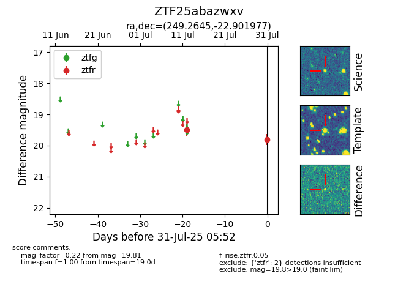

Target ZTF25abazwxv at 2025-07-31 05:52, see:
FINK: fink-portal.org/ZTF25abazwxv
Lasair: lasair-ztf.lsst.ac.uk/objects/ZTF25abazwxv
ALeRCE: alerce.online/object/ZTF25abazwxv
alt names
ZTF25abazwxv (ztf,fink)
coordinates:
equatorial (ra, dec) = (249.2645,-22.90198)
galactic (l, b) = (355.9057,+16.03230)
photometry
last ztfr=19.81
2 ztfr detections
